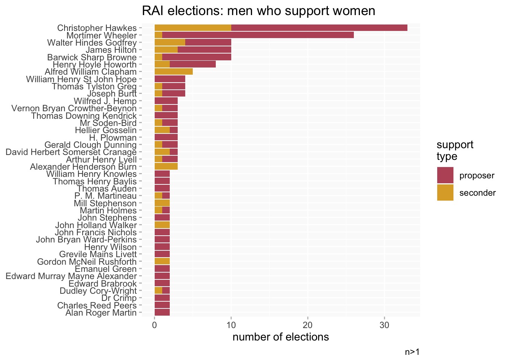

RAI elections
RAI
Women fellows elected to the Royal Archaeological Institute and their supporters
I did some analysis of SAL elections for my interview talk, but I never got round to doing anything similar for RAI. But the data seems to be much more patchy so I won’t repeat all of the same analysis.
Note: not sure if I’ve recorded this one already, but there are both <unknown value> and “Proposer not recorded” (item Q17) in the proposer names column. Unknown value might mean that there is a proposer name but the signature is illegible.?
Update: added seconders
Wikibase query
SAL and RAI - slightly amended version of query about SAL/RAI elections
Elections of women
(I haven’t checked record dates yet: should this big gap be here?)
Who are the most active supporters?
Female proposers

Combined female proposers and seconders
Male proposers

Combined male proposers and seconders